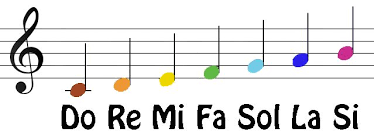

Lenguaje musical
El lenguaje musical es un sistema de comunicación que utiliza símbolos, signos y convenciones para representar y transmitir ideas musicales. Incluye elementos como la notación musical, la teoría musical, la armonía, el ritmo y la melodía. Es fundamental para la composición, interpretación y análisis de la música.

Notación Musical
La notación musical es un sistema de símbolos que representa los sonidos musicales. Incluye notas, silencios, claves, compases y otros signos que indican la altura, duración y ritmo de las notas. Es esencial para la lectura y escritura de música.

Partituras
Las partituras son representaciones gráficas de la música que muestran las notas, ritmos y otros elementos musicales. Pueden ser para un solo instrumento o para una orquesta completa. Las partituras permiten a los músicos interpretar la música de manera precisa.